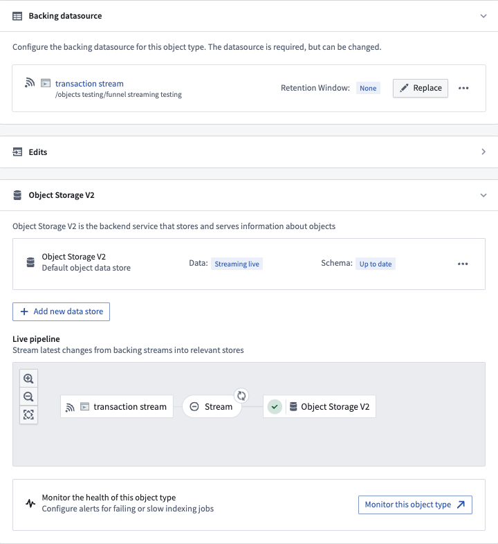
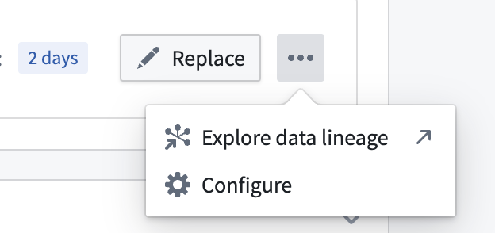
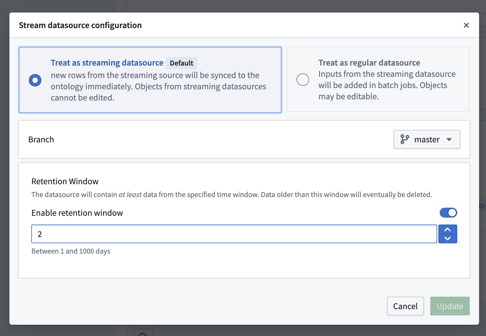
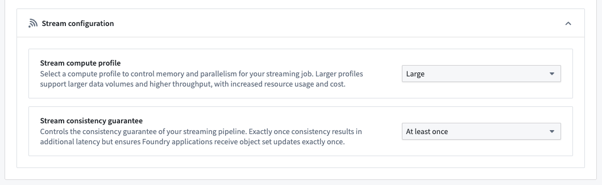
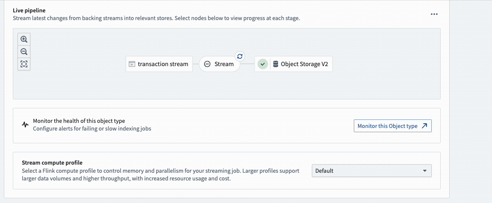

In addition to batch Ontology data indexing, Object Storage v2 supports low-latency streaming data indexing into the Ontology by using Foundry streams as input datasources. By departing from the batch infrastructure used for non-streaming Foundry datasets, streams enable indexing of data into Foundry Ontology on the order of seconds or minutes to support latency sensitive operational workflows.
:::callout{theme="neutral"} If you have more questions about Ontology streaming behavior, review our frequently asked questions documentation.
For guidance on the performance and the latency of streaming pipelines, review our streaming performance considerations documentation. :::
Streaming in Object Storage v2 uses a âmost recent update winsâ strategy, where every stream is treated like a changelog stream. If your events are coming from your source out of order, you will end up with incorrect data in your Ontology. If you can guarantee order in your input stream, Object Storage v2 streaming will handle your updates with the same order.
Ontology streaming behavior and its feature set is still actively developed; below are some of the current product limitations to consider before using Ontology streaming:
Object types with stream input datasources are configured directly in Pipeline Builder or the Ontology Manager, similar to any other Foundry Ontology object type.
:::callout{theme="neutral"} If you do not yet have an input stream configured, you can create one through integrating with an existing stream in the Data Connection application or by building a stream pipeline in Pipeline Builder. :::
After creating a new object type (or using an existing object type), navigate to the Datasources tab in Ontology Manager, select a stream input datasource in the Backing datasource section as shown below, and save your changes into the Foundry Ontology.

For additional configurations over the input datasource stream, select the ellipses button for more options as shown below.


:::callout{theme="neutral"} Stream datasources can also be configured for many-to-many link types. :::
The Stream configuration section provides options to optimize your object type's streaming job.

:::callout{theme="neutral"} Modifying an object type's stream configuration will restart its associated streaming job, causing a temporary delay for new streaming records to be processed. :::
The interface between streams and the Ontology can be considered conceptually similar to changelog datasets. Each record in the input stream will contain the data for each property being written into the Ontology. Each record will update all of the properties for a given object, specified by primary key. Deletions can be specified on the input record by setting metadata on the input stream.
Funnel will index records in the order that they are written to the datasource stream, so those streams should be partitioned by primary key and ordered by event timestamp which can be done in the upstream Pipeline Builder pipeline.
If you are having issues with your stream pipelines, review the debug a failing stream documentation.
To view details and metrics for an object type's streaming job, select the Stream bubble in the pipeline diagram.
